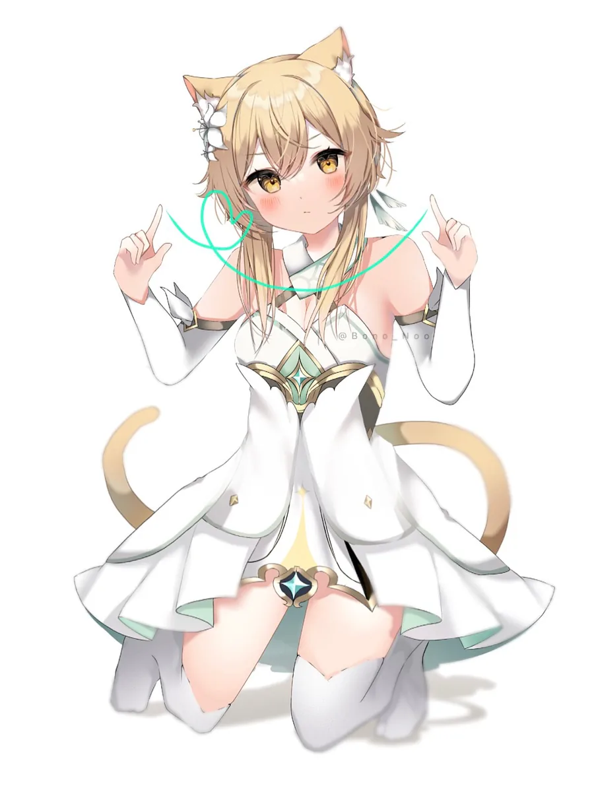

手工整理 · 第二版
猫娘
完全图鉴
关于头顶长耳朵这件事，我们需要认真谈谈。猫娘广泛分布于动画、漫画、游戏及其周边，外形与人类高度相似，区别在于头顶多出一对毛茸茸的三角形耳朵，以及一条心情好时会自己摇起来的尾巴。
今日已吸猫 0 次

什么是猫娘
【猫娘】ねこみみ / nekomimi
名词。一种头顶长着猫耳、身后拖着尾巴、平时以人类形态生活的神秘生物。性格因个体差异极大，唯一共通点是：没有一只对小鱼干说不。
-
耳朵 ×2可一百八十度转向，情绪全写在上面。嘴上说「没事」，耳朵早就出卖了她。
-
尾巴 ×1开心时左右摇，紧张时炸成平时两倍粗。据说可以通过尾巴判断她今天的心情，误差约等于没有。
-
叫声「喵」根据语境至少有十四种含义：高兴、抗议、要饭、撒娇、以及「你为什么还不开罐罐」。
-
习性白天嗜睡，晚上精神。对纸箱、毛线球和你的键盘有强烈的占有欲，尤其在你需要用的时候。
常见品种
-
傲娇型
「才、才不是为了你才摇尾巴的！」——耳朵红透，尾巴摇成了风扇。
观测难度 ★★☆ -
三无型
面无表情，尾巴规律摆动。耳朵会替她说话，多摸两下就会呼噜。
观测难度 ★★★★ -
元气型
尾巴转速与开心程度成正比。缺点：凌晨三点会踩着你的肚子跑酷。
观测难度 ★☆☆ -
腹黑型
笑得越甜，越要看好你的小鱼干。上次库存见底只用了半天。
观测难度 ★★★ -
大小姐型
只喝特定温度的水，但会趁你不注意，把最后一条小鱼干留给你。
观测难度 ★★★★★
野生猫娘观测记录
以下个体均在互联网深处被观测到，按捕获顺序编号，点击可放大观测。每张都标注了原始画师——喜欢哪位，就点名字去她的主页看更多。
饲养须知
关于投喂
投喂前洗手。小鱼干库存永远不足，请按预算的三倍采购。
关于肢体接触
禁止突然举起——会炸毛。禁止摸完就跑——会记仇，且记很久。
关于纸箱
纸箱不分大小，也不分贵贱。只要她进去了，那个纸箱就是她的了。
关于过冬
天冷请提前提供膝上位置。否则她会自己找一个，比如你的键盘。